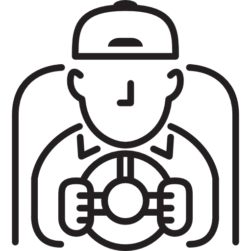

Transporte
Escolar

 Mensagem
Mensagem
 Motorista
Motorista
 Rotas
Rotas
 Escola
Escola
Avisos e Recados
Recentes-
Ônibus Quebrado!
Avisamos que nesta quinta-feira dia 12/04/2024 o transporte escolar rural não estará passando devido ao fato do ônibus estar em manutenção sem previsão de retorno. Agradecemos a compreenção. Obrigado
 Secretaria do Transporte
12/04/2024
Secretaria do Transporte
12/04/2024
-
Estrada Interditada
Devido as fortes chuvas dos ultimos dias, comunicamos que a rota dos alunos da fazenda Brisanta está interditada e hoje o transporte escolar não atenderá está rota. Agradecemos a compreenção. Obrigado
Secretaria do Transporte
12/04/2024
-
Motorista Doente
Bom dia,aos alunos do pimentel hoje segunda-feira o ônibus não vai passar pois o motorista está gripado e ele voltara as atividades normal apenas na quarta-feira. Agradecemos a compreenção.Obrigado
Secretaria do Transporte
12/04/2024
-
Estrada Interditada
Aviso, hoje não ira passar o ônibus pois a estrada esta asfaltando, retornaremos as atividades normal sexta-feira. Agradecemos a compreenção. Obrigado.
Secretaria do Transporte
12/04/2024
-
Reunião da Secretaria de Educação
Atenção, dia 06/09 e 07/09 os motoristas estaram em reunião entao eles não iram passar nesse dia. Agradecemos a compreenção. Obrigado.
Secretaria do Transporte
12/04/2024
-
Feriado
Bom Dia, amanhã dia 21/08 será feriado e o ônibus não vai passar mais retornaremos as atividades na quinta-feira normalmente. Agradecemos a compreenção. Obrigado.
Secretaria do Transporte
12/04/2024
Dispositivos
Acesse do seu dispositivo favoritoCelular
Computador
Tablet
Funções disponíveis
Tudo sobre o transporte escolar-

Essa funcionalidade é dedicada as mesnagens que os alunos iram receber da secretaria de educação sobre o transporte e quais são os motoristas e os ônibus disponíveis de cada rota,e sobre avisos de ônibus quebrado,dias de chuvas e etc.
-

Essa funcionalidade é para o motorista se comunicar com os alunos sobre o horário,atrasos,imprevistos e etc.
-

Aqui será as rotas e pontos para os alunos saberem o lugar mais próximo do seu sítio e acaba facilitando para os alunos e motorista.
-
Essa funcionalidade será para os alunos e a escola se comunicar,quando o ônibus não passar em dias de chuvas,imprevistos,ônibus quebrado e outras coisas,a escola já ira saber quem são os alunos e o motivo para justificar a falta e assim os alunos não seram prejudicados.


 Colégio Estadual
Colégio Estadual (44) 3423-1020
(44) 3423-1020 colary@hotmail.com
colary@hotmail.com